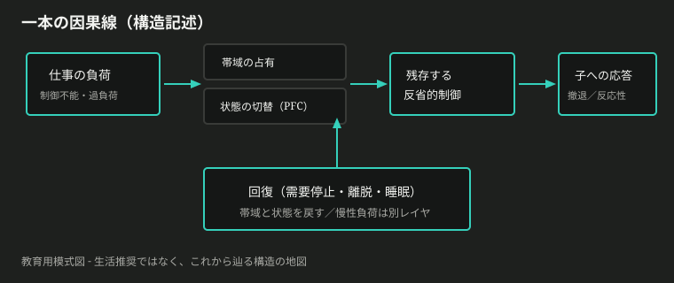
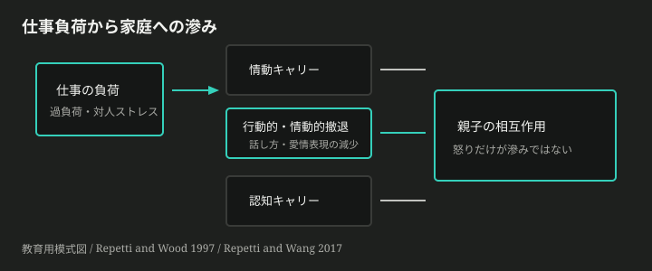
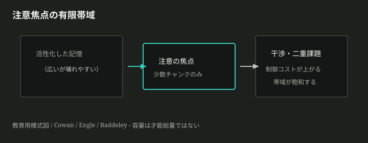
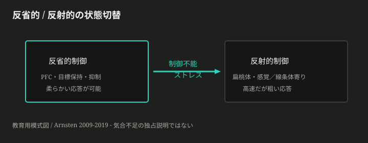
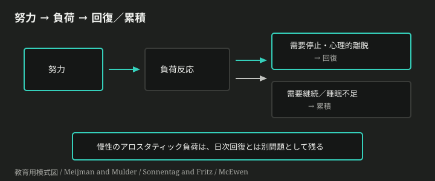

仕事が比較的スムーズな日は、子への対応に余裕が出る。同じ親なのに、仕事がきつい日は声が先に出たり、感情を引っ込めてしまったりする。自分の中には認知的 capacity があり、1日の有限な認知リソースを何に割くかが問題になる。回復の仕方も重要に見える。
この三点は、すでに現場の観察として強い。足りないのは、スローガンではなく、脳と行動の側で何が起きているかの分解である。
この記事が運ぶ一本線
生活の完成レシピは置かない。運ぶのは、次の構造だけだ。

確定文: この記事は三点を、仕事負荷→残存制御→子への応答←回復、の一本線として分解する（生活推奨ではない）。
各章の末尾に、FACT / MODEL のラベル付きで「いま確定したこと」を置く。タンクや「良い親」道徳の争いは、主線の外（後半の Claim）へ隔離する。
「きつい日の自分は、冷たい親だ」と感じるのは自然だ。だが、それは性格の証拠としては粗い。
日次で測れる滲み
Repetti と Wood は、就学前の子を持つ母親を平日連続で追った。仕事の負荷や対人ストレスが高い日ほど、帰宅後の相互作用は怒り一色というより、話し方が減り、愛情表現も減る——行動的・情動的な撤退が目立つ(*1)。後年の整理では、気分のキャリーに加え、関わりを避けたい認知や配偶者の補償も含めて読まれている(*2)。

得たもの: 日次の仕事負荷とその日の応答変化を、観測可能な問題として置ける。失うもの: 悪い日＝本質、滲み＝怒鳴りだけ。適用範囲は、仕事と育児が同じ一日に重なる場面だ。
確定文: 【FACT】仕事負荷の高い日ほど、子への応答は（怒りだけでなく）撤退として変わりうる。
では、その日に有限になっている脳側のものは何か。
「認知リソースが足りない」は、頭のスペックが低い、と聞こえやすい。現場で折れるのは、しばしば別だ。子どもの話を聞きながら、未返信を思い出し、夕食の段取りを更新し、怒らない——この同時性が重い。
保持・抑制・切替
作業記憶は、いま必要な情報を一時保持し処理する有限システムとして定式化された(*3)。Cowan は注意の焦点に載るチャンク数が強く制約されると論じ(*4)、Engle は個人差の核を干渉下の実行注意に置く(*5)。Miyake らは実行機能を更新・抑制・切替に分解した(*6)。「自制心」一語では、何が飽和しているかが見えない。

シミュレーションを開く — 干渉下では同時に保持・制御できる帯域はすぐに飽和する
ここで「割り振り」が指す対象が定まる。先に有限なのは時計のマスではなく、この帯域である。何に時間を使うか、はその帯域を何が占有するか、の話に接続する。
得たもの: capacity を才能総量から帯域へ移せる。失うもの: 無限マルチタスク前提。適用範囲は干渉・二重課題・情動負荷がある場面だ。
確定文: 【MODEL】有限なのは才能総量ではなく、干渉下で目標を保ち衝動を抑える帯域である。
では、なぜストレス下では、この帯域の制御が急に難しくなるのか。
優しい返し方は、頭では知っている。それでも制御不能な忙しさの渦中では、知っている応答が届かないことがある。気合が足りないように感じる。感じ方としては正しいが、機構としては粗い。
反省から反射へ
Arnsten の総説は、かなり軽度でも制御不能なストレスが、前頭前野（PFC）の高次認知を急速に損なうことを整理する(*7)。高まったカテコールアミンは PFC のネットワークを弱め、扁桃体や感覚・線条体寄りの制御を強めうる。脳は反省的なトップダウンから、反射的なボトムアップへ状態を切り替える(*8)(*9)。

得たもの: ストレスを「気分」だけでなく、高次制御の一時オフラインとして読める。失うもの: 気合不足の独占説明。適用範囲は制御不能・不確実・評価圧のある負荷だ。単純な反射課題では別の話になる。
確定文: 【FACT/MODEL】制御不能ストレスは、反省的制御を弱め、反射寄りへ状態を切り替えうる。
その残存制御は、子の挑戦行動とどう交差するのか。
仕事の残りカスが家庭に入ると、表れは一通りではない。短い声になる夜もあれば、ソファの端で静かになる夜もある。どちらも「愛がない」証拠に見えやすい。見え方としては痛いが、観測としては足りない。
撤退と反応的ネガティブ
撤退は、短期には過負荷を下げるコーピングの面を持ちうる。同時に、話し方と愛情表現が減れば、関係の薄い相互作用が残る(*10)。
さらに、子どもの挑戦的な行動は、親の残っている制御を試す。Deater-Deckard らは、母親の作業記憶が低いと、子の反対・注意散漫への反応的ネガティブが顕著になることを示した(*11)。実行機能全般でも、親 EF が低いほど、子の問題行動と厳しい養育の結びが強く、家庭のカオスがその交差を修飾しうる(*12)。枠組みとしては、親の情動・認知制御容量が養育の条件になる(*13)。
ここで、入口の直感が回収される。仕事が楽な日に対応しやすいのは、愛が増えたからというより、残存する反省的制御に余裕がある、という読みが可能になる。相関は運命ではない。個人を診断する道具にもしない。
得たもの: 「仕事↔対応」を、残存制御×子の挑戦の合成として置ける。失うもの: 良い親／悪い親の固定ラベル。適用範囲は帰宅後の短時間相互作用だ。
確定文: 【FACT】残存制御が低いほど、子の挑戦行動への反応的ネガティブと結びつきやすい。
では回復は、何を止め、何を戻すのか。
「今日はもう空だ」と感じる夜がある。帰宅すれば戻るのか。頭が仕事のままなら、足りないのか。
需要が止まると戻る
Meijman と Mulder の努力–回復は、努力が負荷反応を生み、需要が止まれば戻る、と置く(*14)。物理的に帰宅しても、頭が仕事のままなら、同じ機能系への需要は続きうる。Sonnentag と Fritz は、心理的離脱・リラックス・熟達・統制を回復経験として区別した(*15)。
睡眠は別経路を持つ。一夜の睡眠剥奪でも、扁桃体の反応が増し、内側 PFC との結合が落ちうる(*16)。気合で情動を抑える物語と、結合が弱まっている状態は同じではない。
慢性側では、アロスタシス（変化による安定）の過使用がアロスタティック負荷になる(*17)。日次の戻しと、長引く摩耗は、同じ「回復」一語では潰れる。

「意志のタンクが減った」比喩は直観に合うが、短時間ラボの枯渇効果は再現が弱く、主線の根拠にはしない。争点は後半の Claim へ隔離する。
得たもの: 回復を負荷反応の反転として定義できる。失うもの: 帰宅＝回復完了、アプリで慢性が消える。適用範囲は勤務後・夜間・週末の回復窓だ。育児そのものが需要であるときの緊張は残る。
確定文: 【FACT/MODEL】回復は需要停止による負荷反応の反転であり、離脱と睡眠は有力経路。慢性負荷は別レイヤである。
三点を座標に戻すと、「最適化」は何を指す操作になるか。
入口の三点を、ここまでの線で置き直す。
| あなたの直感 | ラベル | 記事が置いた骨格 |
|---|---|---|
| 仕事が楽 → 対応しやすい | FACT＋合成 | 滲み（撤退等）＋残存制御×子の挑戦 |
| 有限 capacity の割り振りが要る | MODEL | 有限なのは才能ではなく帯域。割り振り＝何が帯域を占有するか |
| 回復が重要 | FACT/MODEL | 需要停止・離脱・睡眠で戻す。慢性は別レイヤ |
教育用の図は入口の近似であり、厳密には多所属の知識グラフである。系譜の矢印と構成の入れ子は同じ図に重ねない。
最適化の三座標（howtoではない）
「1日のリソースを最適化せよ」は、次の三操作のどれを触っているかの座標として読める。勝者のルーチンは決めない。
| 座標 | 触っているもの |
|---|---|
| 占有を減らす | 同時目標・メンタル労働・干渉 |
| 切替を起こしにくくする | 制御不能性・不確実性・評価圧 |
| 戻す | 需要停止・心理的離脱・睡眠 |
新主張を置く軸は、前提（帯域かタンクか気合か）／層（滲み・帯域・切替・回復）／圧力（日次負荷・需要の非停止・商品化）で足りることが多い。
EX-place
入力: 「朝の意志力ゲージ、ポモドーロでタンク回復、夜3分マインドフルネス、週末は良い親トレーニング」と売るアプリ。
操作: 三点のどれ／最適化3座標のどれを触ると主張しているか。FACT / MODEL / CONTESTED のどれが混ざっているか、1文で書く。
自己点検: 製品の是非で終わっていないか。著者推奨を書いていないか。
確定文: 三点は FACT/MODEL で支えられ、最適化は占有を減らす／切替を起こしにくくする／戻す、の座標である（howtoではない）。
主線から外したスローガンを、ここで分解する。勝者は決めない。
| ID | スローガン | 共通事実 | 争点 | 測定 | 隠れた価値 | 主な根拠 |
|---|---|---|---|---|---|---|
| C1 | 認知リソースは1日タンクで使い切ると枯れる | 制御・注意には有限性がある | タンク機構か；ラボ効果は再現するか | 連続課題・主観疲労 | 努力責任 | Baumeister 1998; Inzlicht 2012; Hagger 2016; Vohs 2021 |
| C2 | ストレスフリーなら良い親になれる | 仕事負荷は相互作用に滲みうる | 「良い親」定義；因果の向き | 観察・自己報告 | 理想親の道徳化 | Repetti; Deater-Deckard |
| C3 | セルフケアで制御は戻る | 需要停止・睡眠は戻しうる | 用量；育児需要；慢性 | REQ・睡眠 | 個人の回復義務化 | Meijman; Sonnentag; Yoo |
| C4 | 気合と習慣で容量は実質無限 | 自動化は帯域を空けうる | 切替は気合で消えるか | 習慣遵守 | 努力信仰 | Cowan; Engle; Arnsten |
| C5 | 怒鳴らない＝愛、撤退＝愛がない | 撤退もストレス日に増えうる | コーピングか冷淡か | 観察 | 愛情の可視化 | Repetti & Wood |
| C6 | 回復アプリを入れれば解ける | 回復経験に関連報告あり | 環境負荷の外部化 | アプリ利用 | 技術解決主義 | Sonnentag & Fritz |
EX-doubt
入力: Claim C1「認知リソースは1日タンクで、使い切ると枯れる」
操作: 共通事実／争点／測定／隠れた価値のうち、いちばん怪しい点と足りない証拠を書く。
自己点検: 日常の有限感とラボの ego depletion、PFCオフラインを同一視していないか。全否定／全肯定で閉じていないか。
確定文: タンク・良い親道徳・アプリ万能は主線から隔離し、分解する。
構造を掴んでも、問いが始まらなければ主体性は商品側に戻る。確認クイズではない。
| ID | 錨 | 動き | 種 |
|---|---|---|---|
| P1 | 三点 / 3座標 | 分解 | 自分の「きつい日」は、占有／切替／戻すのどれが先に折れているか。 |
| P2 | C1 / 帯域・切替 | 地図選択 | 「タンクが空」を帯域飽和と PFC オフラインに分けると、何が残るか。 |
| P3 | C2・C5 / 交差 | 境界 | 「良い対応」を愛の量で読むときと残存制御で読むときで、何が変わるか。 |
| P4 | C3 / 回復 | 境界 | 離脱や睡眠が制御を戻す、と言えない場面はどこか。 |
| P5 | C6 / 慢性 | 分解 | アプリ介入を急性の戻しと慢性負荷に分けると衝突点はどこか。 |
記事はここで止まる。結晶化するメンタルモデルは、この先の対話と、読者自身のメモの側にある。
確定文: 問いは確認クイズではなく、思考の開始点である。